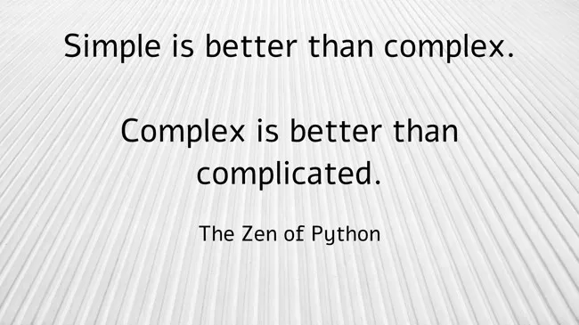

Medium
-
Understanding the GA4 BigQuery Export Schema and Structure
A qualitative investigation into one of the weirdest data structures ever forced upon millions of innocent, unsuspecting analysts
-
A Guide to Functional Data Engineering in BigQuery
An exploration of the Functional Data Engineering paradigm and how to implement this in BigQuery
-
How to Build a Simple Data Stack on BigQuery

Building data infrastructure on BigQuery is a highly capable, escalable, extensible, accessible and future-proof choice for any team or organisation, at any scale
-
Essential SQL Functions for GA4 BigQuery Export Analysis
The fundamental functions you’ll need to master if you want to work with the GA4 events data export in BigQuery
-
Google Pub/Sub to BigQuery the simple way
A hands-on guide to implementing BigQuery Subscriptions in Pub/Sub for simple message and streaming ingestion
-
Getting Started with BigQuery SQL User Defined Functions (SQL UDFs)

A powerful and fundamental building block which enables custom extension of the core BigQuery platform functionality
-
Google Cloud Storage (GCS) to BigQuery the simple way

Because simple is better than complex (but complex is better than complicated)
-
How to Build a Unique MD5 Row Hash Using SQL in BigQuery (Plus a Few Related Things)

Using native BigQuery functionality to generate a dynamic, unique row identifier in SQL
-
Plotting Bar Charts in BigQuery Using a SQL User Defined Function (UDF)

Minimise context switching and make your workflow faster
-
SQL String Templating in BigQuery Scripts: Four Methods
Powerful foundational techniques to help unlock the power of BigQuery scripting and automation
-
Getting Started with BigQuery Scripting
Demystifying this powerful but potentially difficult to grasp aspect of BigQuery functionality, one simple step at a time
-
Connecting BigQuery to Colab and Converting Query Results to Python Dictionaries
A simple method for working with BigQuery results in Python (for pandaphobes)